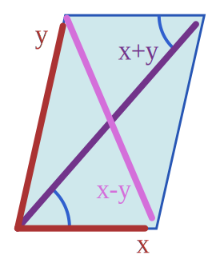

不同世界的角动量
宏观世界的角动量
首先我们回顾一下角动量的定义，给定一个转轴和物体的位置及动量矢量 $\ma hbf{r}$ 、 $\ma hbf{p}$ ，那么这个物体所具有的角动量就是 $$ \vec{L} = \ma hbf{r} \ imes \ma hbf{p} $$ 如下图所示

其中 $\vec{L}$ 与转轴共线，它的方向可以由右手定则确定。
与动量的意义类似，角动量也是一种守恒量，这使得在研究某些问题时以角动量守恒为出发点会更容易一些。
闲话 ：为什么角动量是一种守恒量？
回答这个问题之前我们联想一下其他的守恒量：动量。一个量如果是守恒的，说明它一定存在某种对称性；比如将这个系统在空间中平移后系统的动量不改变，那么这个系统的动量就是守恒的（满足平移对称性）。同样的道理，角动量守恒是因为系统旋转一个角度，角动量不变（旋转对称性）。当系统含有有心力时一般都会满足角动量守恒，如点电荷对周围电荷的库仑力不会因为旋转一个角度而发生改变。说到这里我们又联想到了能量守恒，那么能量为什么守恒？普遍的观点是因为系统的哈密顿量对于时间是平移对称的（ $\par ial H / \par ial = 0$ ），所以能量也是守恒的。
角动量的合成
和一般矢量一样，经典图像里角动量的合成也遵循矢量合成法则，即平行四边形定则（或三角形定则）

不妨设存在任意两个角动量 $\ma hbf{L}_1$ 、 $\ma hbf{L}_2$ ，所合成的到的矢量为 $\ma hbf{L}_3$ ，它们对应的模长分别为 $L_1$ 、 $L_2$ 和 $L_3$ ，则有
$$
\begin{ga her}
\ma hbf{L_1} + \ma hbf{L_2} = \ma hbf{L}_3
|\ma hbf{L}_1 + \ma hbf{L}_2| = |\ma hbf{L}_3| = L_3
| L_1 - L_2 | \le L_3 \le L_1 + L_2
\end{ga her} $$ 上式中 $L_3$ 的值可以在 $|L_1 - L_2|$ 到 $L_1 + L_2$ 之间连续变化；
这个过程也可以看成由两个向量合成得到另一个向量乘以一个系数。
电子的轨道角动量
到了微观世界，一切变得不那么明晰起来。让我们从电子的轨道角动量讲起。
1913 年，玻尔建立了玻尔原子模型，他通过「对应性原理」导出电子的角动量大小应该是 $n\hbar$ ，然而问题来了：
- 既然有角动量，那么角动量的方向在哪里？换言之，电子绕核旋转的轴是朝向哪里的？
- 如果电子仍然以经典的物理图像绕某轴旋转，那么根据角动量守恒，它应该在某个平面内运动，所以这个如何确定这个平面？
- 玻尔在使用「对应性原理」导出角动量的表达式时是在「当主量子数 $n$ 很大时」才能「近似认为电子绕核的角动量等同于用经典方法计算出的角动量」，那么当 $n$ 比较小时，这个近似也成立吗？
- S ern-Gerlach 实验表明，电子角动量的空间取向是量子化的，即相对于观察者，电子的角动量只能取几个特定的角度，这也是玻尔模型所无法解释的。
现在我们知道，描述一个电子的轨道角动量我们需要两个量子数 $l$ 和 $m$ ，它们分别影响电子轨道角动量的大小和角动量在 $z$ 轴方向上的投影大小。这里说明一下，我们此时选取的坐标系是实验室坐标系，所讨论的量都是观测得到值。
电子的轨道角动量的值 $$ L = \sqr {l(l + 1)} \hbar $$ 电子轨道角动量的空间取向也是量子化的，即在 $z$ 轴方向上，轨道角动量只能取 $\hbar$ 的整数倍 $m\hbar$

例如
- 处在 s 态的电子，角量子数 $l$ 为 0 ，故其轨道角动量是 0 ，那么轨道角动量在 $z$ 轴上的投影也一定是 0 ；
- 处于 p 态的电子，角量子数 $l$ 为 1 ，轨道角动量的大小为 $\sqr {2}\hbar$ ，轨道角动量在 $z$ 轴上的投影可以为 $-\hbar$, 0, $+\hbar$ ；
- 处于 d 态的电子，角量子数 $l$ 为 2 ，轨道角动量的大小为 $\sqr {6}\hbar$ ，轨道角动量在 $z$ 轴上的投影可以为 $-2\hbar$, $-\hbar$, $0$, $+\hbar$ , $+2\hbar$ ；
- 由此类推……
现在问题来了，在上面的图像中我们只确定了电子角动量的 大小 和其在 $z$ 轴上的 投影 ，根据经典图像，这样的条件并不能使我们在空间中 确定 一个轴。但是在微观世界中，这个角动量没有经典图像对应，电子并不是在一个经典的轨道中运行，也不是在绕着某个轴进动，我们只能用两个量来描述一个电子的轨道角动量。
电子的自旋角动量
我们使用 $S$ 表示电子自旋的大小。
1920s， S ern-Gerlach 实验证明了电子自旋的存在，由自旋产生的自旋角动量也被测出，与轨道角动量不同的是，电子的自旋角动量大小只有一个值 $S = \sqr {\frac{1}{2} (\frac{1}{2} + 1)} \hbar= \frac{\sqr 3}{2} \hbar$ ，并且它在 $z$ 轴上的投影只能是 $+\frac{1}{2}\hbar$ 或 $-\frac{1}{2} \hbar$ 。
电子的自旋并不能看成是电子在绕着某个轴自转，因为以电子的大小和质量要产生 $0.5 \hbar$ 的角动量，它表面的速度将超过光速，因此电子的自旋没有经典图像与之对应。
角动量的耦合
虽然轨道角动量、自旋角动量不能用经典图像来解释，但是它们耦合是我们还是可以用有限的矢量的加和关系来表示它们之间的耦合。本文中，角动量耦合特指在微观世界中两个角动量的耦合。这其中「耦合」即为合成、加和之意。
为了表达方便，后面我们将直接使用量子数来表示角动量，轨道角动量 $L$ 的量子数为 $l,\; l\in N$ ，自旋量子数为 $s,\; s\in {-\frac{1}{2}, +\frac{1}{2}}$
$j$ 的确定
在耦合过程中，不光要满足矢量合成法则，其合成得到的角动量也要满足量子化条件。
如电子的轨道角动量和自旋角动量耦合得到的总角动量 $$ \ma hbf{J} = \ma hbf{L} + \ma hbf{S} $$ 不妨取 $l = 2$ ，那么得到的 $j$ 值可以是多少呢？
$j$ 、 $l$ 、 $s$ 要能构成一个三角形。
显然 $j$ 要满足
- $l-s \le j \le l + s$ ，即 $\frac{3}{2} \le j\le \frac{5}{2}$
- $j$ 的取值是量子化的，即相邻两个取值的间隔为 $1$
即 $j \in {\frac{3}{2} ,\;\frac{5}{2} }$ 。
$m_j$ 的确定
既然描述一个角动量需要两个量子数，并且我们已经知道了 $j$ ，那么另一个量子数 $m_j$ ，即 $\ma hbf{J}$ 在 $z$ 轴上的投影应该如何确定呢？
很简单，直接对 $m_{l}$ 和 $m_s$ 加和即可，因为 $m$ 是投影，同一个方向上的投影完全可以直接加和。
- $m_l = 2, m_s = +\frac{1}{2}\;, m_j = \frac{5}{2}$
- $m_l = 2, m_s = -\frac{1}{2}\;, m_j = \frac{3}{2}$
- $m_l = 0, m_s = -\frac{1}{2}\;, m_j = -\frac{1}{2}$
- …
从这我们也可以看出，两个角动量耦合时得到的 mj 是一个定值，但 j 却不是定值。
电子轨道角动量和自旋角动量耦合是如此，两个电子各自的总角动量 $\ma hbf{J}$ 的耦合也是如此。
Clebsch-Gordan 系数
已经确定了一个角动量，我们如何更方便地描述这个耦合过程呢？可以使用狄拉克符号表示。
描述一个角动量时我们只需要两个两个量子数 $$ \bigr | j, m \bigr \rangle $$ 描述两个角动量的加和时我们使用 $$ \bigr | j_1, m_1 ; j_2, m_2 \bigr \rangle $$ 也有人写成 $$ \bigr | j_1, j_2 ; m_1, m_2 \bigr \rangle $$ 只要表达的意思一致就可以。
显然， $\bigr | j_1, m_1 ; j_2, m_2 \bigr \rangle$ 描述的是一个叠加态 $$ \bigr | j_1, m_1 ; j_2, m2 \bigr \rangle = \sum{j=|j_1 - j_2|}^{j_1 + j_2} c_j\bigr | j, m_1 + m_2 \bigr \rangle $$ 如果我们想知道它们中某个基的展开系数 $c_j$ ，只需要 $$ c_j = \bigr \langle j,m \bigr | j_1, m_1;\; j_2, m_2 \bigr \rangle $$ 或者 $$ c_j = \bigr \langle j_1, m_1;\; j_2, m_2 \bigr | j,m \bigr > $$ 这个系数就叫做 Clebsch-Gordan 系数。
如果我们要交换 $\ma hbf{J}_1$ 和 $\ma hbf{J}_2$ ，C-G 系数有下面的性质 $$ \bigr \langle j_1, m_1;\; j_2, m_2 \bigr | j,m \bigr > = (-1)^{j - j_1 - j_2} \bigr \langle j_2, m_2;\; j_1, m_1 \bigr | j,m \bigr > $$ 它还有更多对称相关的性质，详见维基百科。
除了 C-G 系数外，科学家们还经常使用 Wigner 3j Symbol 来计算这个系数，它被表示成
$$
\begin{pma rix}
j_1 & j_2 & j
m_1 & m_2 & m
\end{pma rix}
$$
它和 C-G 系数有着下面的转换关系
$$
\begin{pma rix}
j_1 & j_2 & j
m_1 & m_2 & m
\end{pma rix}
= \frac{(-1)^{j_1 - j_2 - m}}{\sqr {2j + 1}} \bigr \langle j_1, m_1; j_2, m_2 \bigr |
j, m \bigr \rangle
$$
同时它也有着下面的对称相关性质
$$
\begin{pma rix}
j_1 & j_2 & j
m_1 & m_2 & m
\end{pma rix}
\begin{pma rix}
j & j_1 & j_2
m & m_1 & m_2
\end{pma rix}
\begin{pma rix}
j_2 & j & j_1
m_2 & m & m_1
\end{pma rix}
$$
$$
\begin{pma rix}
j_1 & j_2 & j
m_1 & m_2 & m
\end{pma rix}
= (-1)^{j_1 + j_2 + j}
\begin{pma rix}
j_2 & j_1 & j
m_2 & m_1 & m
\end{pma rix}
$$
$$
\begin{pma rix}
j_1 & j_2 & j
m_1 & m_2 & m
\end{pma rix}
= (-1)^{j_1 + j_2 + j}
\begin{pma rix}
j_1 & j_2 & j
-m_1 & -m_2 & -m
\end{pma rix}
$$
限于知识水平，本人不打算讲如何算 C-G 系数和 3j symbol，如果需要用到，有很多办法可以得到这个值，比较方便的手段有
- 查表 ，很明显可以看出每个表的行和列都满足平方和为 1，这也是为满足归一性产生的结果；
- 使用 GNU Scien ific Library 提供的 Wiger-3j-Symbol 函数；
- 使用 Ma hema ica 提供的 Wiger-3j-Symbol 函数或 ClebschGordan 函数；
- 使用各种 Home-made 的计算函数计算（请自行搜索 Gi Hub ，有 MATLAB 版和 Py hon 版以及 Cxx 版等）；
自己编程实现。
扩展
- 以上的讨论不仅限于电子的总角动量 $\ma hbf{J}$ ，如果考虑核的自旋 $\ma hbf{I}$ 与电子角动量耦合得到原子总角动量 $\ma hbf{F}$ ，这个耦合结果也可以用 C-G 系数来描述；
- 如果我们有一个态 $\bigr | j, m_j \bigr \rangle$ 并且想知道它可以由哪些纯态构成，查 C-G 系数表不失为一种简单快捷的方法，这在算某些态上电子的激发率时很重要。